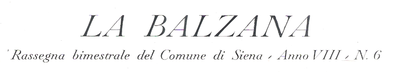

|
- SESSANT'ANNI FA -
|
|

Alcune immagini tratte dal periodico "La Balzana" dell'anno 1962 camion della spazzatura  riparazione del semaforo fra via Rinaldini e Banchi di Sotto  stadio comunale  Vigili Urbani alla Croce del Travaglio  agenti del dazio a S.Domenico  scuole in via Roma  torna indietro |